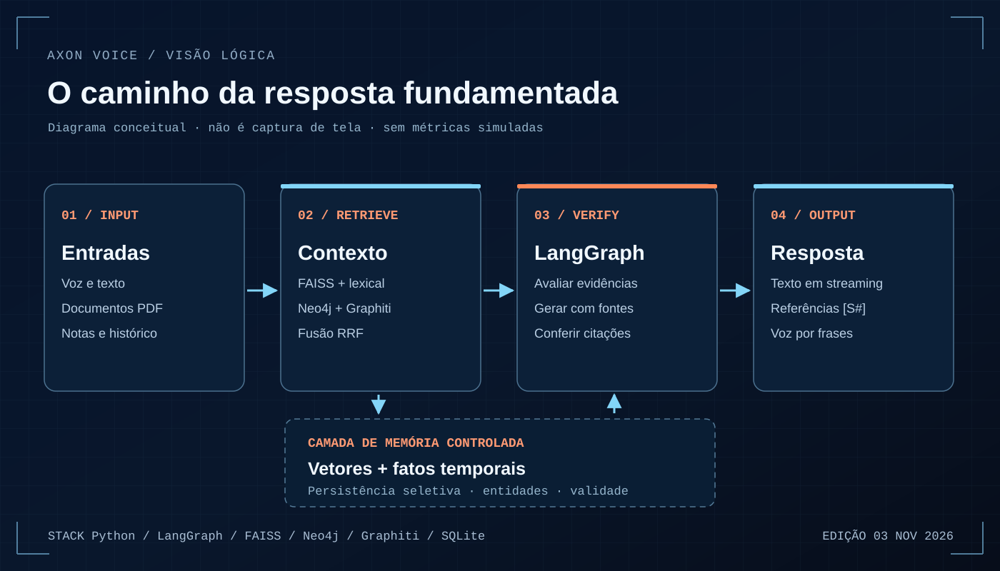

Contexto rastreável
Ingestão de PDF e notas, referências identificadas por fonte e página, com acesso ao trecho utilizado na resposta.
Engenharia de IA · estudo de caso · nov 2026
Um assistente de IA que integra voz, recuperação híbrida, memória temporal e respostas fundamentadas por documentos. O desafio central não é gerar texto — é recuperar contexto relevante, verificar o suporte das afirmações e tornar o resultado auditável.
Projeto independente · repositório privado · execução local ou com provedores de IA configuráveis
01 / VISÃO GERAL
O Axon combina fluxos conversacionais e memória de longo prazo com recuperação de evidências. Cada etapa foi pensada para deixar o contexto inspecionável, sem vender fluência textual como sinônimo de precisão.
Ingestão de PDF e notas, referências identificadas por fonte e página, com acesso ao trecho utilizado na resposta.
Memória vetorial e grafo de entidades com contexto temporal, distinguindo informações do usuário de respostas do modelo.
O fluxo corretivo dispõe de caminhos para verificar citações e se abster quando não encontra suporte suficiente.
02 / ARQUITETURA
Diagrama vetorial baseado nos componentes documentados da branch principal do projeto. É uma representação arquitetural, não uma captura da interface ou um resultado de benchmark.

Texto, voz com transcrição e documentos chegam ao servidor Python. A camada HTTP aplica validações de requisição e controles de acesso locais.
FAISS, pesquisa lexical, base documental e vizinhanças do Neo4j/Graphiti fornecem candidatos de contexto. O motor combina rankings com RRF ponderado.
O fluxo corretivo percorre recuperação, avaliação de suficiência, geração e verificação. Referências [S#] vinculam afirmações aos trechos recuperados.
A tela recebe streaming; a fala é processada por frases. Uma fila separada avalia o que é elegível para a memória, sem registrar as respostas do assistente como fatos do usuário.
03 / DECISÕES DE ENGENHARIA
Os detalhes que tornam um sistema de IA inspecionável: fronteiras entre dados, proveniência, caminhos de falha e observabilidade.
Busca lexical, vetores e relações temporais são combinados. Os resultados ainda exigem avaliação de relevância: a arquitetura não garante, por si só, recuperação correta.
FAISS · Neo4j · Graphiti · RRFFontes entram com identificadores tipados e proveniência. O verificador rejeita referências inexistentes e identifica afirmações sem suporte.
LangGraph · fontes [S#] · abstençãoFatos declarados pelo usuário são tratados separadamente das respostas geradas. Entidades e fatos podem ter períodos de validade e regras de atualização.
FAISS · Graphiti · fatos temporaisRotinas registram modelo, uso, latência e custos. O sistema admite modelos locais e provedores externos, com atenção ao limite de privacidade de cada configuração.
Python · SQLite · TTS/STT · custo04 / EVALS & QUALIDADE
O repositório inclui código para avaliações de recuperação, roteamento e latência, além de CI para testes convencionais. A existência de instrumentos não deve ser confundida com metas atingidas.
Recall@k, MRR e nDCG; análise de ruído entre projetos e origem de documentos.
Precisão, recall, macro-F1, acerto exato, custo e latências p50/p95 por backend.
Validade de citações, afirmações sem suporte e comportamento de abstenção.
Lint, pytest, testes de integração/E2E, varredura de segredos e smoke em Windows com CircleCI.
Nota metodológica: há rotinas de avaliação local que dependem de modelos, dados rotulados e serviços externos ao CI. Não apresento metas configuradas, contagem em README ou resultados de conjuntos usados para ajuste como validação independente de produção.
05 / ESTADO DO PROJETO
O Axon é desenvolvido para uso pessoal e experimentação. Não reivindico clientes, usuários comerciais ou escala de produção.
Generalização de recall, memória conversacional e desempenho de modelos reais precisam de medição independente e contínua.
Windows é o ambiente mais exercitado. Desempenho e disponibilidade dependem dos modelos, hardware, configurações e serviços opcionais.
O repositório é privado. Este estudo de caso usa diagramas vetoriais próprios; capturas antigas foram retiradas até serem substituídas por imagens atuais verificadas.
FIM / PRÓXIMO PASSO
Arquitetura, trade-offs, políticas de memória e critérios de validação podem ser apresentados em uma conversa técnica.